Oradea
Obiective turistice
Cazare
Evenimente
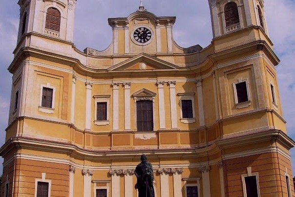
Biserica Romano-Catolica
Bazilica „Ridicarea la Cer a Fecioarei Maria” este catedrala Diecezei de Oradea. Lăcașul constituie împreună cu Șirul Canonicilor și cu Palatul Episcopal cel mai mare ansamblu baroc de ...
Biserica Romano-Catolica
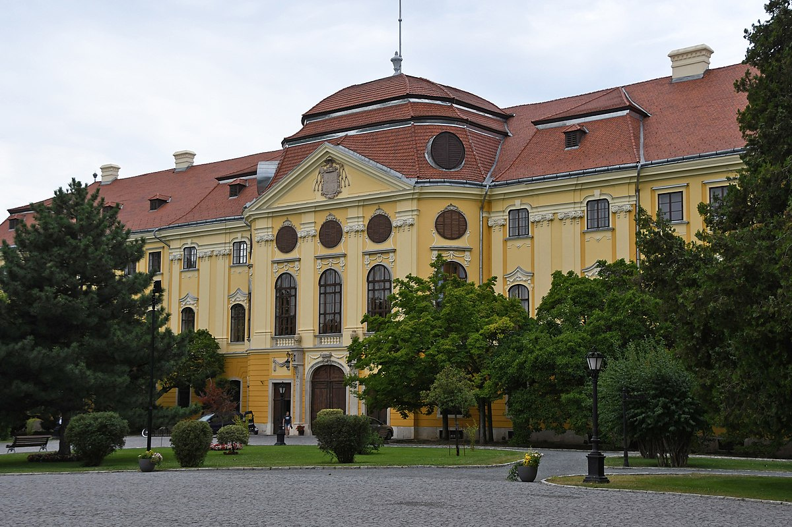
Palatul Baroc
Palatul Episcopiei Romano-Catolice din Oradea, cunoscut și ca Palatul Baroc din Oradea, este unul din cele mai valoroase edificii construite în stil baroc pe teritoriul...
Palatul Baroc
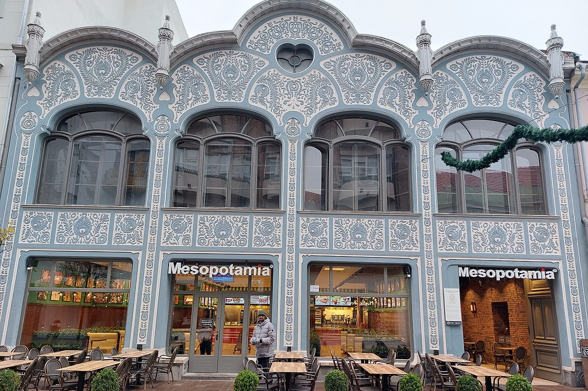
Casa Deutsch
Casa Deutsch este o clădire monument istoric din Oradea. A fost construită între anii 1906 și 1910, după proiectul lui Sztarill Ferenc. Întreaga fațadă a clădirii cu două nivele este decorată ...
Casa Deutsch
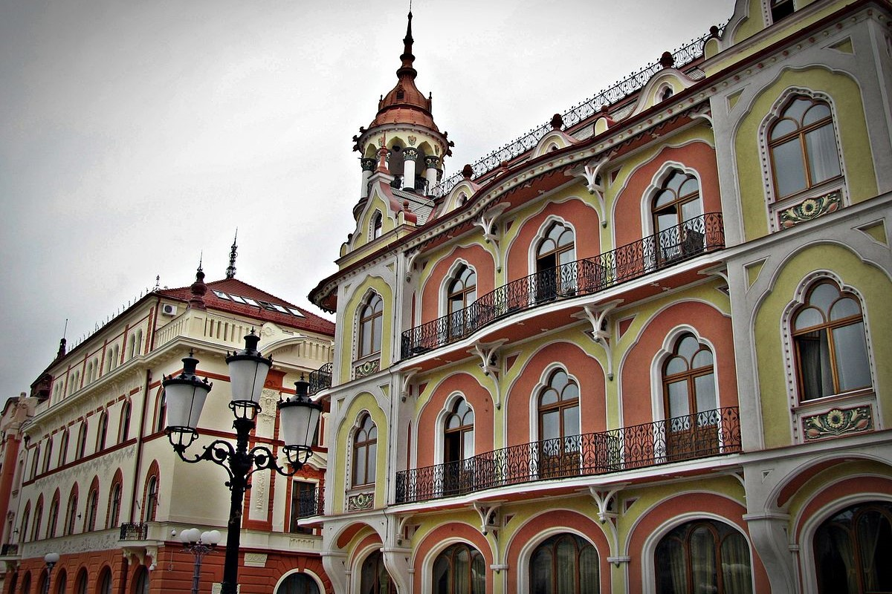
Hotelul Astoria
Hotelul Astoria, sau Palatul Sztarill este o clădire istorică din Oradea, construită între 1902 și 1906. Edificiul este renumit datorită cafenelei în stil secession ce ....
Hotelul Astoria
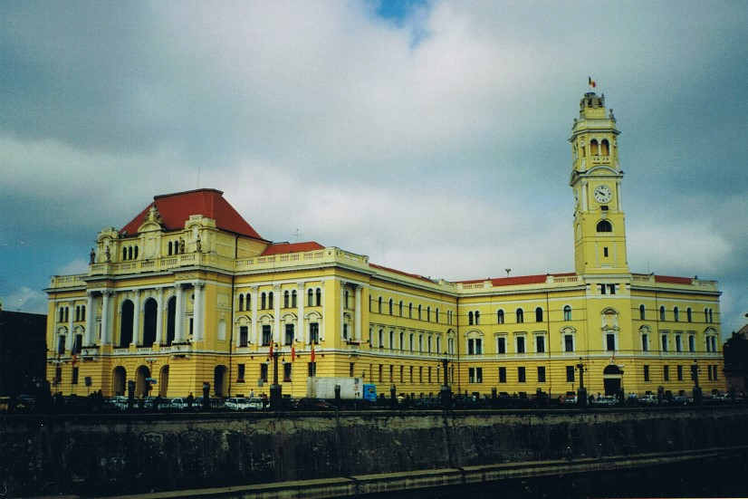
Palatul Primăriei
Palatul primăriei în Oradea este o clădire amplasată în partea de nord-vest a Pieței Centrale (Unirii). A fost înălțată între anii 1902-1903 după planurile arhitectului Kálmán Rimanóczy. Palatul se află pe fostul amplasament al episcopiei catolice din secolul XVIII. ...
Palatul Primăriei
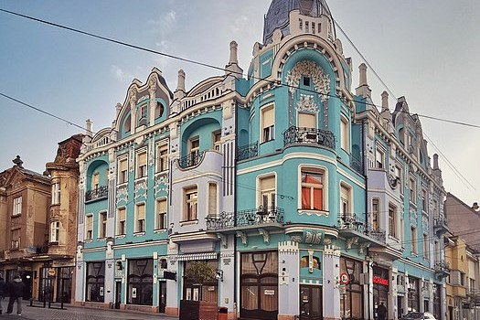
Palatul Moskovits
Palatul Moskovits, al cărui proiect din 1905 îi aparține arhitectului Rimanoczy Kalman jr., este unul dintre cele mai frumoase exemple ale stilului secession ...
Palatul Moskovits
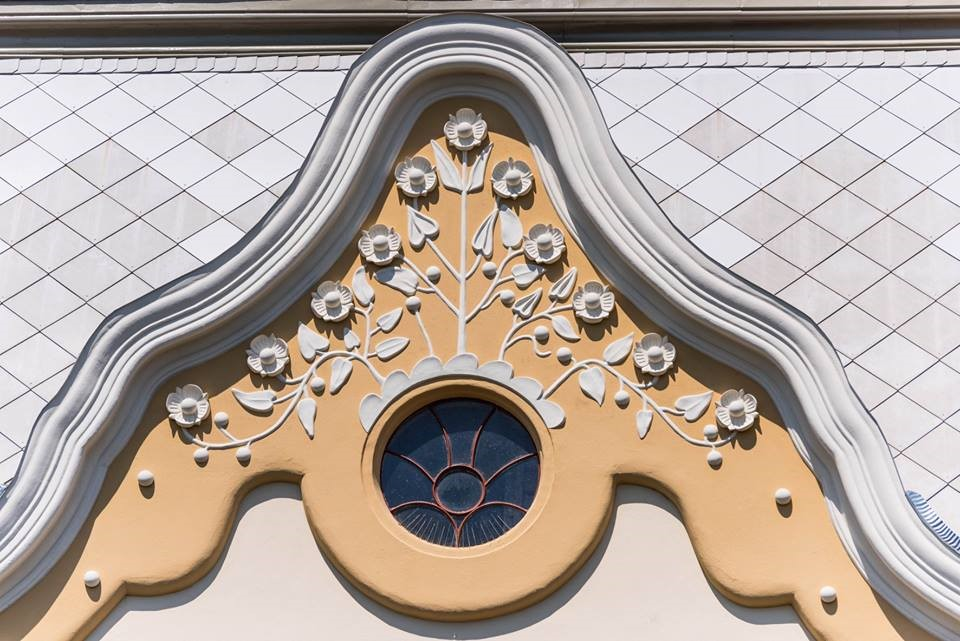
Palatul Poinar
Planurile au fost aprobate de consiliul municipal în ianuarie 1907. Construcția a fost realizată de proiectantul Ferenc Sztarill, iar casa a fost finalizată atât de repede încât mutarea în ...
Palatul Poinar
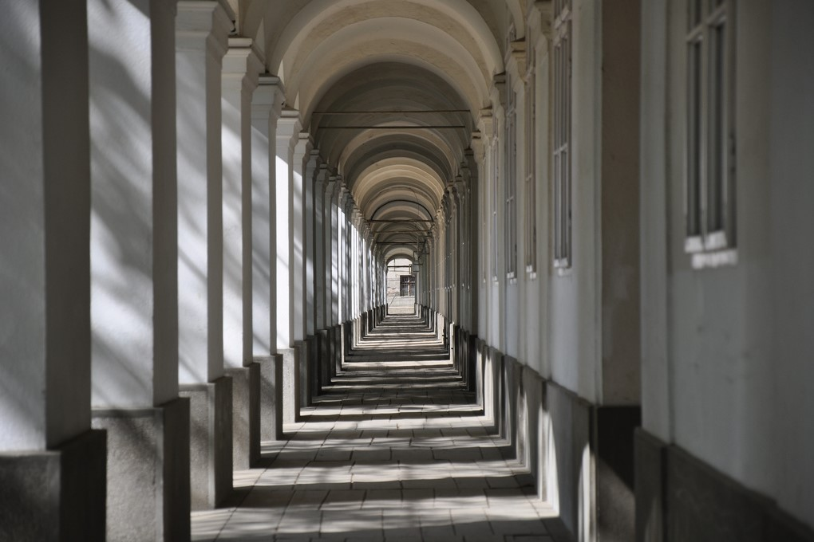
Șirul Canonicilor
Șirul Canonicilor este un monument istoric și de arhitectură din Oradea. Este compus din 57 de arcade în stil baroc, care constituie un coridor lung de peste 250 de metri unind 10 clădiri....
Șirul Canonicilor
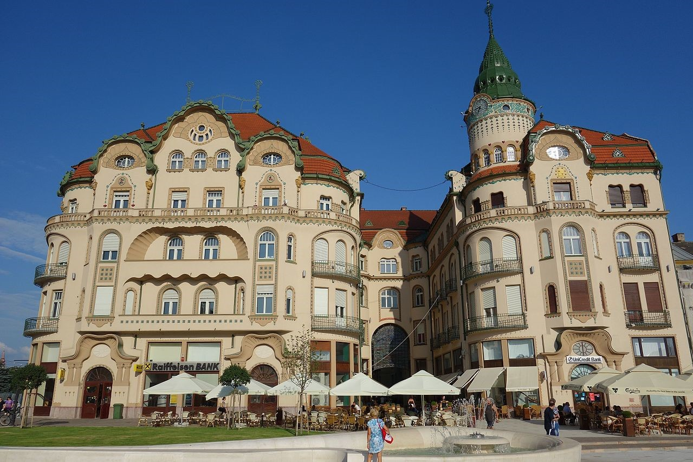
Palatul Vulturul Negru
Palatul, aflat la adresa str. Independenței Nr. 1, a fost construit între 1907-1908 de arhitecții orădeni Marcell Komor și Dezső Jakab, în stil secession....
Palatul Vulturul Negru
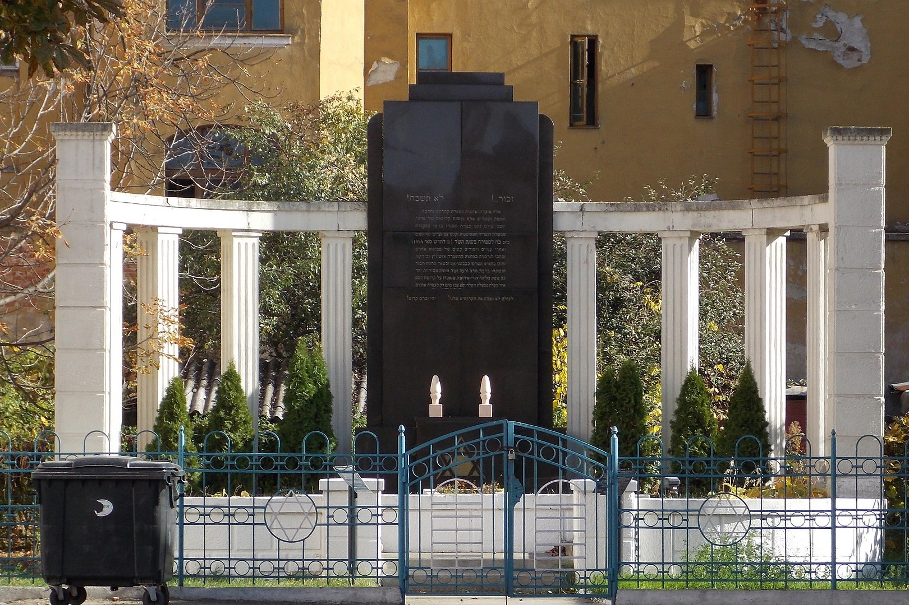
Monumentul Holocaustului
În vara anului 1941 Oficiul pentru controlul străinilor (KEOKH) din Ungaria (inclusiv teritoriile reocupate în urma Dictatului de la Viena) a dispus strângerea evreilor care avuseseră cetățenie străină....
Monumentul Holocaustului
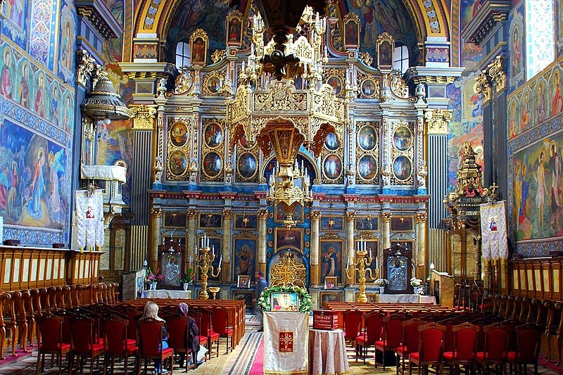
Biserica cu Lună
Biserica cu Lună, cunoscută și sub denumirea Catedrala Adormirea Maicii Domnului, este o biserică creștin-ortodoxă aflată în Oradea, construită între anii 1784-1790. A fost denumită...
Biserica cu Lună
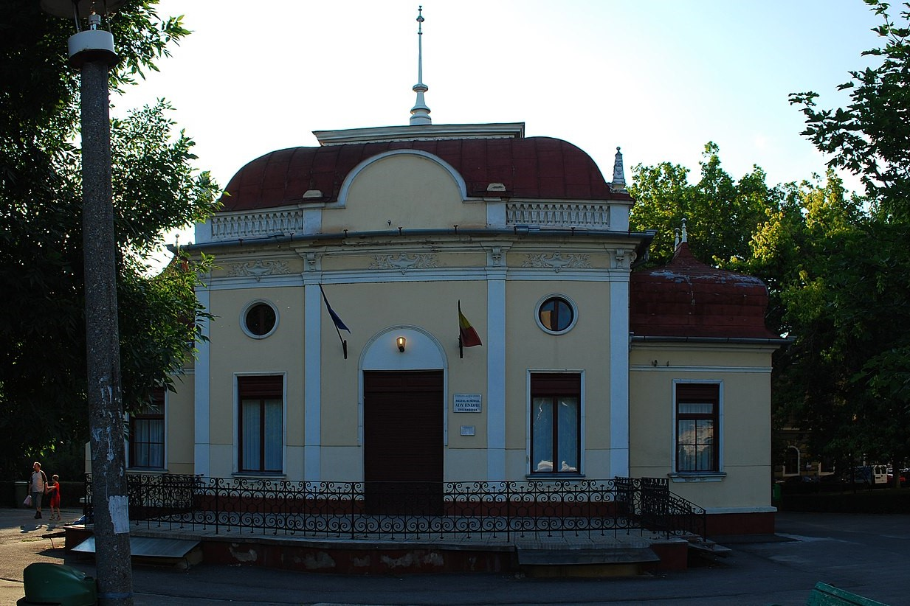
Muzeul Ady Endre
Micul muzeu din parcul Traian a fost înființat în anul 1957, la 80 de ani de la nașterea poetului, în fostul local Mülleráj. Clădirea a fost construită în secolul al XIX-lea, fiind...
Muzeul Ady Endre
{kind=link}
{kind=link}
{kind=link}
{kind=link}
{kind=link}
{kind=link}
{kind=link}
{kind=link}
{kind=link}
{kind=link}
{kind=link}
{kind=link}